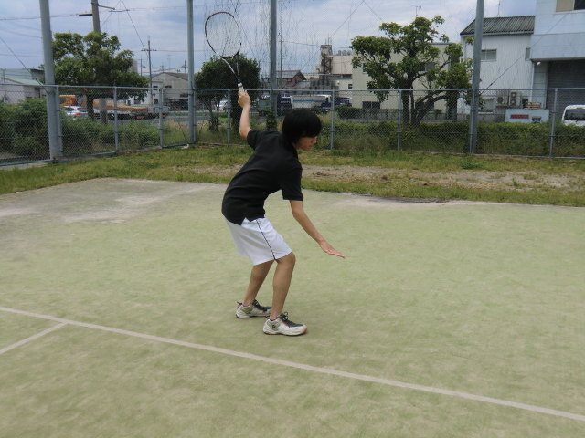
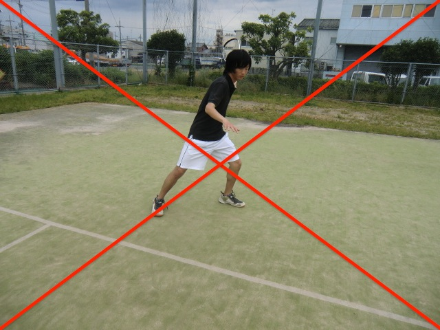
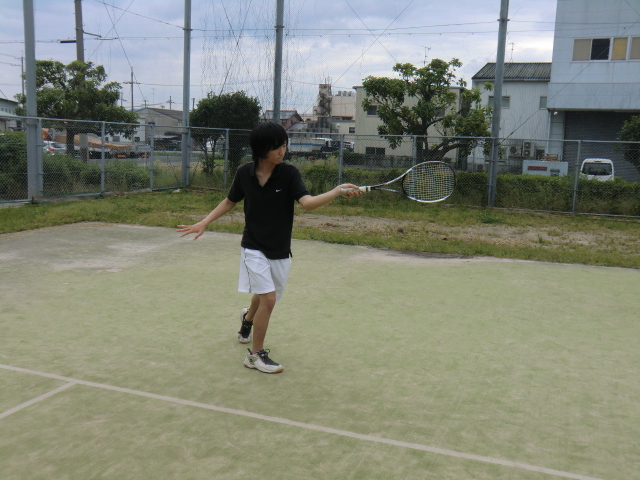
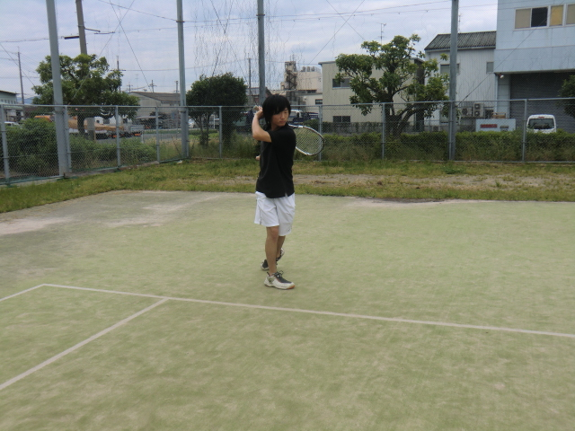

フォアハンド・ストローク
図１をクローズドスタンス（足を閉じた打ち方）、図２をオープンスタンス（足を開いた打ち方）といい、シングルスのないソフトテニスではスピード重視のオープンスタンス（図２）を使いません。また、クローズドスタンスはオープンスタンスに比べて、ボールが当たるまでに打つ方向が読めないという特徴があるので、今オープンスタンスの人はクローズドスタンスに直しましょう。
図１
図２
図１では体全体の重心を後ろにやり、右手を図のような位置に添えます（右手を添えるのは、結構大事なポイントです）。そして打つ方向を相手にわからなくするために、肩を内にいれて、お腹を隠します。

図３
図３では打点をできる限り高くし、押し出すように打ちます。このとき、体全体の重心を前にやるとボールのスピードが上がります。

図４
最後はへそを打つ方向に向け、腰をしっかり捻って腕を首に巻き付けるように振り切ります。